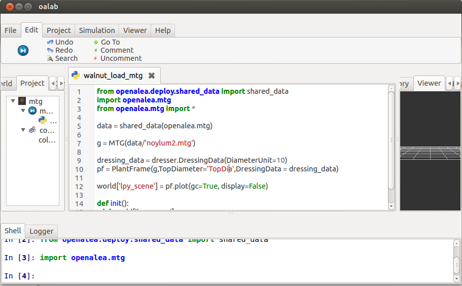
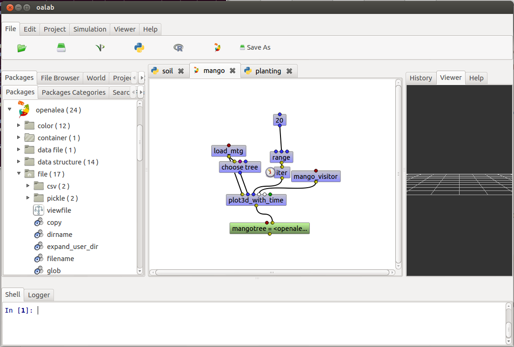
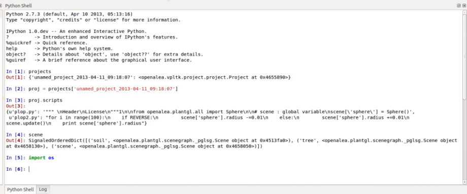
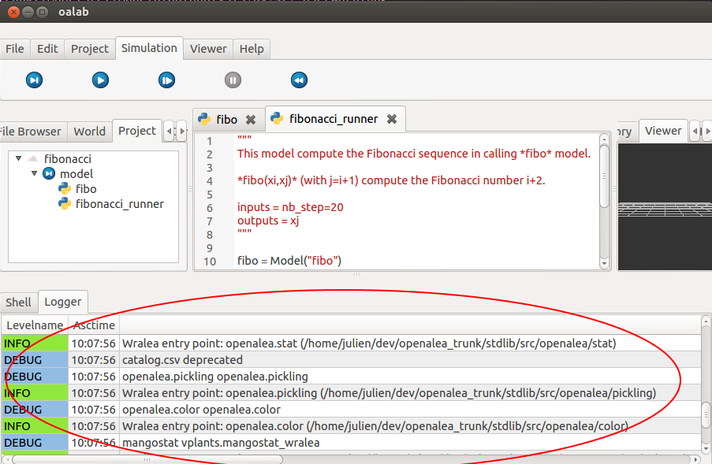
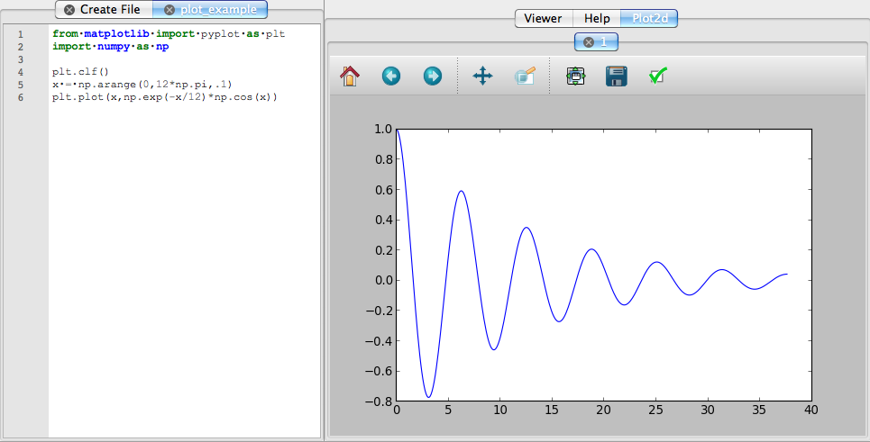
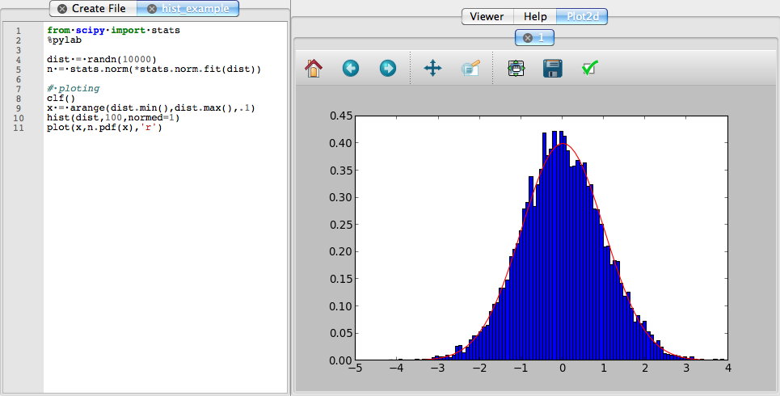

User's Documentation¶
Getting start¶
Upgrade from OpenAlea <= 1.2¶
If you have OpenAlea installed from sources from GForge and you want the last version available on GitHub, you have to follow this steps:
update old openalea (optionnal)¶
cd openalea
svn up
modify old multisetup.py¶
- comment following lines
- core (~line 52)
- misc (~line 58)
- vpltk (Depends of version you have.) (~line 51)
- oalab (Depends of version you have.)
- run multisetup
python multisetup.py develop
download and install new version of openalea¶
cd ..
git clone https://github.com/openalea/openalea openalea-git
cd openalea-git
python multisetup.py develop
Features¶
Warning
Move it
OpenAleaLab automatically store all the commands that you use in the interpreter (bottom red circle) during the current session into the history panel (right red circle).
{kind=link}
You can browse this history into the panel History. The commands are displayed in order (most recent at the bottom).
This components is useful to check what you have done previously and how you have done it. You can copy/paste a line that you have already used from the history into the interpreter.
This graphical component display informations about objects that you can select.
It can display help from models, packages and nodes.
Metadata¶
Project Loading¶
Project Viewer¶
Text Editor¶

Syntax Coloring
Tab Completion (Work in progress)
search (Ctrl+F)
go to (Ctrl+G)
execute selected code (Ctrl+R)
- run model
- run (F1)
- step (F2)
- animate (F3)
- stop (F4) (Work in progress)
- init (F5)
{kind=link}
Workflow Editor¶

- package manager
- create node from PM
- create node from models
- create node from control
{kind=link}
IPython Interpreter¶

- Syntax Coloring
- Tab Completion (Work in progress)
- magic commands
- plots
- interactive documentation
{kind=link}
Store¶
Work in progress
Control Panel¶
Work in progress
Logger¶
Permit to show many informations about Application execution (useful to debug but unusable for beginner).
{kind=link}
File Browser¶
A simple file browser which allow to check what is on your computer and to show and edit files.
World Viewer¶
3D Viewer¶
Plot2d¶
The Plot2d plugin add interactive 2D plot to OpenAleaLab, using matplotlib. When loaded, all plot functionalities from matplotlib pyplot or pylab (which is included in ipython after running pylab) are automatically send to this applet. For Example, you can write in a python model:
from matplotlib import pyplot as plt
import numpy as np
plt.clf()
x = np.arange(0,12*np.pi,.1)
plt.plot(np.exp(-x/12)*np.cos(x))
Running this model gives the following result:
{kind=link}
Another example, using pylab:
from scipy import stats
%pylab
dist = randn(10000)
n = stats.norm(*stats.norm.fit(dist))
# ploting
clf()
x = arange(dist.min(),dist.max(),.1)
hist(dist,100,normed=1)
plot(x,n.pdf(x),'r')
Produce this:
{kind=link}